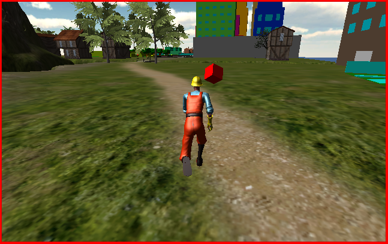

Unity
Para nuestro trabajo final de Unity se nos pidio crear un juego de recoleccion de objetos dentro de la ciudad previamente creada en Unity
Caracteristicas del juego:
- A la ciudad se le añadio un bosque, playa, montañas etc.
- El juego recolecta objetos (en mi caso cubos)
- Se añadieron elemntos del asset store
- Esta en tercera persona
- Los objetos a recoger cuentan con animacion

Opinion
Como ya mencione, trabajar en blender y en Unity fue lo que mas me agrado debido a la creacion del juego y el uso de un software mas profesional